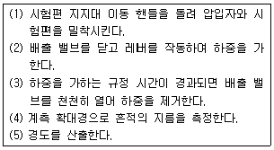

침투비파괴검사기능사 (2007-01-28 기출문제)
1과목: 침투탐상시험법(대략구분)
1. 침투탐상시험에서 다음 중 침투시간과 관계없는 것은?
- 현상방법
- 재질의 종류
- 검출하려는 결함의 종류
- 시험시 온도 및 주위 조건
(정답률: 24%)

2. 강자성체의 자기적 성질에서 자계의 세기를 나타내는 단위는?
- Wb(Weber)
- S(Stokes)
- A/m(Amper/meter)
- N/m(newton/meter)
(정답률: 72%)
3. 다음 중 침투탐상 시험장치 중 배액대의 역할은?
- 현상액이 충분히 적용되도록 하는 역할
- 침투액을 여과하는 역할
- 시험체 표면에 있는 잉여 침투액을 제거하는 역할
- 전처리시 오염물을 제거하는 역할
(정답률: 26%)
4. 다음 중 입자의 크기가 1nm일 때 동일한 크기를 나타낸 것은?
- 1× 10-6m
- 1× 10-9m
- 1× 10-12m
- 1× 10-15m
(정답률: 16%)
5. 침투탐상검사용 시험장치에 대한 사용 방법의 설명이 올바른 것은?
- 침지법에 사용하는 탐상장치는 용제제거성 침투 탐상에 적용한다.
- 침지법에 사용하는 탐상장치는 대형 시험체의 국부적인 탐상에 적용한다.
- 분무법에 사용하는 탐상장치는 침지법과 비교하여 장치가 간편하다.
- 솔질법에 사용하는 탐상장치는 대형 시험체나 시험면적이 넓은 시험체에 적용한다.
(정답률: 17%)
6. 침투탐상시험에서 현상이 잘 되어있는 경우에 나타나는 결함 지시모양의 크기를 실제 결함크기와 비교 하였을 때 다음 중 가장 적합한 것은?
- 결함지시모양의 크기 = 실제 결함크기
- 결함지시모양의 크기 ＜ 실제 결함크기
- 결함지시모양의 크기 ≥ 실제 결함크기
- 결함지시모양의 크기 ≤ 실제 결함크기
(정답률: 18%)
7. 다음 중 자외선조사장치에 사용되는 수은등에서 발생되는 광선이 아닌 것은?
- X-선
- 적외선
- 자외선
- 가시광선
(정답률: 21%)
8. 다음 중에서 온도측정과 관련한 절대온도(K) 환산식을 바르게 타나낸 것은?
- K = 273 + ℃
- K = 273 - ℉
- K = 460 + ℃
- K = 273 - ℃
(정답률: 45%)
9. 환경 등의 안전을 고려하여 다음 중 침투탐상검사 시스템과 분리하여 설치해야 하는 장치는?
- 전처리 장치
- 침투장치
- 유화장치
- 현상장치
(정답률: 43%)
10. 침투탐상시험에서 탐상에 사용하는 탐상제의 성능 및 조작 방법의 적합 여부 조사에 사용되는 것은?
- I.Q.I
- 링 시험편
- 대비시험편
- 알루미늄 T형 시험편
(정답률: 10%)
11. 침투탐상시험으로 표면 바로 밑의 열려있지 않은 결함을 검출하는 경우의 설명으로 옳은 것은?
- 용제제거성 염색침투탐상시험법으로 검출한다.
- 수세성 형광침투탐상시험법으로 검출한다.
- 후유화성 형광침투탐상시험법으로 검출한다.
- 침투탐상시험방법으로는 표면 밑의 결함은 검출할 수 없다.
(정답률: 14%)
12. 침투탐상 시험결과의 해석과 평가에 대한 올바른 설명은?
- 염색 침투액을 사용하는 경우에는 자외선 아래에서 지시모양을 관찰한다.
- 형광침투액을 사용하는 경우에는 백색조명 아래에서 지시모양을 관찰한다.
- 현상면에 나타나는 지시모양은 시간의 경과에 관계없이 일정한 속도와 크기로 형성된다.
- 지시모양이 나타나면 그 지시가 관련지시인지 또는 무관련 지시인지를 먼저 해석한다.
(정답률: 30%)
13. 침투탐상시험에서 현상제를 적용한 후 관찰할 때까지의 시간을 무엇이라 하는가?
- 유화시간
- 현상시간
- 침투시간
- 검사시간
(정답률: 60%)
14. 침투탐상시험에서 시험편의 전처리로 샌드블라스팅 한 다음 화학적 에칭을 하지 않은 경우 시험상에 흔히 어떤 잘못이 예상되는가?
- 결함을 메꾸어 버릴 우려가 있다.
- 기름이나 오염물이 결함을 막을 우려가 있다.
- 샌드블라스팅 때 모래가 결함을 더 크게 할 우려가 있다.
- 샌드블라스팅을 하면 현상제의 사용을 어렵게 하여 또 다른 결함이 생길 수 있다.
(정답률: 30%)
15. 다음 중 성능이 우수한 침투액의 기능을 설명한 내용으로 틀린 것은?
- 매우 빨리 증발한다.
- 비교적 큰 개구부에도 잔류한다.
- 매우 미세한 개구부에도 쉽게 침투한다.
- 탐상 후 표면으로부터 용이하게 제거된다.
(정답률: 36%)
16. 후유화성 형광침투탐상시험 - 건식현상법을 조합하여 탐상할 때의 처리 순서를 바르게 나타낸 것은?
- 침투처리→건조처리→유화처리→세척처리→현상처리
- 침투처리→현상처리→유화처리→세척처리→건조처리
- 침투처리→세척처리→유화처리→현상처리→건조처리
- 침투처리→유화처리→세척처리→건조처리→현상처리
(정답률: 14%)
17. 다음 시험체 표면의 이물질 중 증기세척으로 제거하기 어려운 것은?
- 녹
- 중유
- 그리스
- 경유
(정답률: 18%)
18. 침투탐상검사의 일종인 윙크 자이글로법에 대한 설명 중 옳은 것은?
- 형광침투액으로만 부하를 걸어 현상처리를 한 후 침투처리를 해야한다.
- 침투처리 및 지시모양의 관찰 단계에서 부하를 걸어 주어야 한다.
- 침투액을 적용한 경우에만 부하를 걸우 주어 세척처리를 한 후 관찰단계에서 또 부하를 걸어 주어야 한다.
- 습식 현상제를 사용할 때에는 반드시 유화처리를 한 후 부하를 걸어주고 관찰하여야 한다.
(정답률: 10%)
19. 다음 중 자외선조사장치는 어떤 침투탐상 시험방법에 사용되는가?
- 형광침투탐상시험
- 염색침투탐상시험
- 비형광침투탐상시험
- 후유화성 염색침투탐상시험
(정답률: 0%)
20. 공기 중에서 초음파의 주파수가 5MHz 일 때 물속에서의 파장은 몇 mm 인가? (단, 물에서의 음속은 1500m/s 이다.)
- 0.1
- 0.3
- 0.5
- 0.7
(정답률: 41%)
2과목: 침투탐상관련규격(대략구분)
21. 다음 중 방사선투과시험에 필요한 물질과의 상호 작용이 아닌 것은?
- 반사 작용
- 전리 작용
- 형광 작용
- 사진 작용
(정답률: 21%)
22. 침투탐상시험에서 침투제와 혼합하여 수세가 가능하도록 하는 물질을 무엇이라 하는가?
- 유화제
- 현상제
- 배액제
- 세척제
(정답률: 69%)
23. 다음 중 침투탐상시험으로 표면결함을 탐상할 수 없는 대상물은?
- 유리
- 목재
- 철강
- 플라스틱
(정답률: 47%)
24. 침투탐상시험시 현상조작 후 특별히 건조조작을 필요로 하는 현상법은?
- 건식 현상법
- 무현상법
- 습식 현상법
- 속건식 현상법
(정답률: 14%)
25. 다음 중 수세성 침투탐상 시험장치에 없어도 되는 것은?
- 침투 탱크
- 유화 탱크
- 세척 탱크
- 현상 탱크
(정답률: 19%)
26. 항공우주용 기기의 침투탐상 검사방법(KS W 0914)에 의한 일반 요구사항의 관찰 조건에 대한 설명이 틀린 것은?
- 염색침투탐상검사인 경우 조명장치는 검사대상 구성부품의 표면에 적어도 1000[lx]의 백색광을 방사하는 것이어야 한다.
- 정치식 형광침투탐상검사인 경우 주위 배경의 백색광은 20[lx] 이하이어야 한다.
- 자외선조사장치는 자외선 필터의 바로 앞면의 방사조도가 180μW/cm2 이상이 되어야 한다.
- 이동식 형광침투탐상장치를 사용하는 경우 검사 중 배경의 백색광을 암막 등으로 최저 가시레벨로 낮춘 상태에서 자외선 강도를 적절히 유지하여야 한다.
(정답률: 22%)
27. 침투탐상 시험방법 및 침투지시모양의 분류(KS B 0816)에서 분류된 결함에 대한 기록 중 포함되어야 할 내용이 아닌 것은?
- 결함길이
- 결함개수
- 결함깊이
- 결함위치
(정답률: 20%)
28. 침투탐상 시험방법 및 침투지시모양의 분류(KS B 0816)에 의한 탐상제의 품질관리 시험에 굴추계가 사용된다. 다음 중 굴추계는 무엇을 하기 위한 기구인가?
- 습식 현상제의 특성을 시험하기 위한 기구
- 유화제 내의 규정 농도 측정을 위한 기구
- 현상제 내의 형광물질 유무를 점검하기 위한 기구
- 침투제 내의 이물질 오염 여부를 확인하기 위한 기구
(정답률: 44%)
29. 침투탐상 시험방법 및 침투지시모양의 분류(KS B 0816)에 의한 물베이스 유화제를 사용하는 후유화성 침투탐상에서 유화제를 적용하는 단계는?
- 전처리 후
- 침투처리 후
- 예비 세척처리 후
- 세척처리 후
(정답률: 10%)
30. 침투탐상 시험방법 및 침투지시모양의 분류(KS B 0816)에서 스프레이 노즐에 의한 잉여 형광침투액의 제거시 물의 온도는 특별한 규정이 정해지지 않으면 몇 ℃ 를 넘지 않아야 하는가?
- 20
- 30
- 40
- 50
(정답률: 16%)
31. 항공우주용 기기의 침투탐상 검사방법(KS W 0914)에서 특별한 지시가 없는 경우 과거에 실시한 청정화, 표면 처리 또는 실제의 사용에 의해 침투탐상 검사의 유효성을 저하시키는 표면상태를 생성하고 있는 징후가 인정되는 경우에 하는 것은?
- 에칭
- 물리적 청정화
- 기계적 청정화
- 용제에 의한 청정화
(정답률: 10%)
32. 비파괴검사 - 침투탐상검사 - 제2부: 침투탐상제의 시험(KS B ISO 3452-2)에 규정한 공정관리시험에서 수용성 현상제에 대하여 실시할 시험 내용이 아닌 것은?
- 농도
- 온도
- 적심성 시험
- 현탁액의 형광성
(정답률: 11%)
33. 침투탐상 시험방법 및 침투지시모양의 분류(KS B 0816)에서 탐상제의 조합이 “FA-W"일 때 첫 번째인 ”F"가 의미하는 것은?
- 형광 침투액
- 염색 침투액
- 건식 현상제
- 속건식 현상제
(정답률: 56%)
34. 침투탐상 시험방법 및 침투지시모양의 분류(KS B 0816)에 의한 잉여침투액 제거방법의 분류 기호가 방법 C"일 때 어떤 방법을 의미하는가?
- 수세에 의한 방법
- 기름베이스 유화제를 사용하는 후유화에 의한 방법
- 물베이스 유화제를 사용하는 후유화에 의한 방법
- 용제 제거에 의한 방법
(정답률: 44%)
35. 침투탐상 시험방법 및 침투지시모양의 분류(KS B 0816)에서 현상방법에 따른 분류 기호가 D로 기록되어 있을 때 이의 설명으로 옳은 것은?
- 건식 형상법이다.
- 습식 현상법이다.
- 속건식 현상법이다.
- 특수 현상법이다.
(정답률: 34%)
36. 침투탐상 시험방법 및 침투지시모양의 분류(KS B 0816)에규정된 시험체 재질이 플라스틱일 때 결함의 종류가 갈라짐이라면 이에 대한 침투처리 후 표준 형상시간은? (단, 현상온도는 15~50℃ 범위이다.)
- 5분
- 7분
- 10분
- 15분
(정답률: 4%)
37. 배관 용접부의 비파괴시험 방법(KS B 0888)에서 비파괴 시험의 기술 구분이 B기준 일 때 침투탐상시험의 합격 판정기준에 대한 설명이다. 틀린 것은?
- 선형 침투지시모향은 모두 불합격이다.
- 연속 침투지시모양은 1개의 길이가 8mm 이하를 합격으로 한다.
- 독립 침투지시모양은 1개의 길이가 8mm 이하를 합격으로 한다.
- 분산 침투지시모양에 대하여는 침투지시모양을 분류 및 길이를 규정에 딸 평가하고 연속된 용접 길이 300mm 당의 합계점이 10점 이하인 경우 합격으로 한다.
(정답률: 36%)
38. 침투탐상 시험방법 및 침투지시모양은 분류(KS B 0816)에서 사용되는 A형 대비시험편의 기호 표시로 옳은 것은?
- PT-A
- MT-A
- RT-A
- UT-A
(정답률: 43%)
39. 침투탐상 시험방법 및 침투지시모양의 분류(KS B 0816)에규정된 유화제의 적용 방법으로서 다음 중 권장하고 있지 않은 경우는?
- 침지
- 붓기
- 분무
- 붓칠
(정답률: 80%)
40. 침투탐상 실험방법 및 침투지시모양의 분류(KS B 0816)에 의해 건식현상제를 사용할 때, 현상처리 전에 건조 처리를 하여야 한다. 이 때의 건조처리 온도 규정으로 옳은 것은?
- 시험체가 놓여 있는 작업실의 실내 온도가 최고 20℃에서 3분 이내에 건조되도록 한다.
- 시험체 표면의 온도를 최고 100℃로 하여 빠르게 건조한다.
- 최고 250℃인 열풍 건조기를 이용하여 짧은 시간에 건조한다.
- 시험체 표면의 수분을 건조시키는 정도로 한다.
(정답률: 80%)
3과목: 금속재료일반 및 용접일반(대략구분)
41. 외부 침입으로 인한 내부 네트워크를 보호하기 위해서 인증된 대상만 접근을 허용하기 위해 설치하는 것은?
- 데이터베이스 서버
- 방화벽 서버
- 백본 서버
- 웹 서버
(정답률: 61%)
42. 다음 중 WindowsXP가 자체적으로 지원하지 않는 기능은?
- PnP
- Multi-tasking
- Virus퇴치
- System 복원
(정답률: 18%)
43. 디지털 신호를 전화선을 통하여 직접 전달될 수 있도록 아날로그 신호로 바꾸어 주고, 전화선을 통해 전송된 아날로그 신호를 디지털 신로로 바꾸어 주는 장치는?
- 포로토콜
- 에뮬레이터
- RS-232C
- 모뎀
(정답률: 14%)
44. 사용자와 서비스 서버사이에 위치하여 사용자의 요구에 따라 원하는 정보를 가져오고 이를 사용자에게 전달해 주는 대리자 역할을 하는 서버 시스템은?
- DNS 서버
- 메일서버
- 프락시 서버
- WWW 서버
(정답률: 25%)
45. 다음 언어 중 기계어에 가장 가까운 것은?
- C
- Basic
- COBOL
- Assembly
(정답률: 20%)
46. 다음 중 이온화 경향이 가장 큰 금속은?
- Cu
- Ni
- Fe
- Mg
(정답률: 38%)
47. 마우러 조직도란 무엇인가?
- C, Si의 양과 주철 조직의 상관도
- 순철의 변태조직도
- 강의 평형상태도
- 강의 항온열처리도
(정답률: 41%)
48. 순철을 가열하여 온도를 올릴 때 결정구조의 변화로 옳은 것은?
- BCC → FCC → HCP
- HCP → BCC → FCC
- FCC → BCC → HCP
- BCC → FCC → BCC
(정답률: 53%)
49. 다음과 같은 실습순서에 의해서 경도 값을 측정하는 것은?

- 브리넬 경도 시험기
- 비커스 경도 시험기
- 쇼어 경도 시험기
- 로크웰 경도 시험기
(정답률: 24%)
50. Al-Cu-Ni-Mg 합금으로 내열성이 우수한 주물로서 공냉 실린더 헤드, 피스톤 등에 사용되는 합금은?
- 실루민
- 라우탈
- 두랄루민
- Y합금
(정답률: 35%)
51. 탄성률이 좋아 스프링 등 고탄성을 요하는 재료로 쓰이는 것은?
- 인청동
- 알루미늄청동
- 니켈청동
- 망간청동
(정답률: 48%)
52. 탄소강의 표준조직으로 Fe3C로 나타내며 6.67% 의 C와 Fe의 화합물은?
- 오스테나이트
- 시멘타이트
- 펄라이트
- 페라이트
(정답률: 17%)
53. 냉간 가공한 재료를 풀림하면 가공 전의 상태로 되돌아 간다. 이 때의 과정으로 옳은 것은?
- 재결정 → 회복 → 결정입자의 성장
- 회복 → 결정입자의 성장 → 재결정
- 결정입자의 성장 → 재결정 → 회복
- 회복 → 재결정 → 결정입자의 성장
(정답률: 30%)
54. 금속의 결정 구조 중 단위격자의 각 꼭지점과 각 면의 중심에 1개씩의 원자가 배열된 결정구조는?
- 체심입방격자
- 면심입방격자
- 백석형 정방격자
- 조밀육방격자
(정답률: 34%)
55. 자기변태에 관한 설명으로 틀린 것은?
- 결정격자의 변화이다.
- 점진적이고 연속적으로 변한다.
- 자기적 성질이 변한다.
- 순철에서는 A2로 표시한다.
(정답률: 24%)
56. 금속 표면에 스텔라이트, 초경합금 등의 금속을 용착시켜 표면 경화층을 만드는 방법은?
- 하드 페이싱
- 전해 경화법
- 금속 침투법
- 금속 착화법
(정답률: 30%)
57. 다음 중 내식성 알루미늄(Al) 합금이 아닌 것은?
- 하이스텔로이드
- 하이드로날륨
- 알클래드
- 알민
(정답률: 40%)
58. 테르밋 용접의 테르밋이란 무엇과 무엇의 혼합물인가?
- 붕사와 붕산의 분말
- 탄소와 규소의 분말
- 알미늄과 산화철의 분말
- 알미늄과 납의 분말
(정답률: 23%)
59. 다층 용접시 사용하는 용착법으로 가장 적합한 것은?
- 전진법
- 대칭법
- 스킵법
- 케스케이드법
(정답률: 50%)
60. 여러개의 돌기를 만들어 용접하는 저항 용접법은?
- 시임 용접
- 프로젝션 용접
- 점 용접
- 펄스 용접
(정답률: 50%)